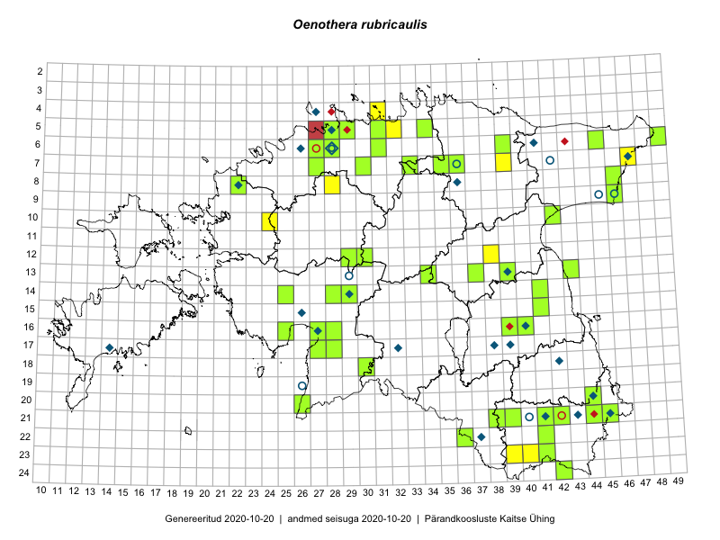

Oenothera rubricaulis — punavarrene kuningakepp
Kaardile koondatud taksonid: Oenothera rubricaulis Kleb. (90)

Kaart põhineb 90 kirjel, neist:
vaatlusi 16
eksemplare 74
Kaasaegsed1 leiukohad asuvad 51 ruudus.
Andmed “Eesti taimede levikuatlasest”,2 sulgudes ruutude arv:3
● 1971–2005 (21)
○ 1921–1970 (5)
△ kuni 1920 (0)
+ hävinud (0)
? kaheldav (0)
Lisaruudud teistest andmebaasidest:4
ELF: 2006– . . . (0)
PKÜ: 2006– . . . (0)
ELF: 1971–2005 (0)
PKÜ: 1997–2005 (0)
| Ruut | Vaatleja(d) | Vaatlusaeg | Kirje PlutoFis |
|---|---|---|---|
| 16-40 | Thea Kull | 2015-07-07 | ruut/ala: Oenothera rubricaulis Kleb. |
| 06-27 | Toomas Kukk | 2015-06-19 | ruut/ala: Oenothera rubricaulis Kleb. |
| 21-45 | Toomas Kukk, Timo Luhamäe, Kersti Tambets, Sten Mander, Janika Sammasto | 2014-07-30 | ruut/ala: Oenothera rubricaulis Kleb. |
| 10-42 | Kai Rünk, Ülle Jõgar, Illi Tarmu | 2015-07-29 | ruut/ala: Oenothera rubricaulis Kleb. |
| 07-47 | Peedu Saar, Thea Kull | 2014-07-24 | ruut/ala: Oenothera rubricaulis Kleb. |
| 10-24 | Hanna-Eliisa Luts, Tõnu Ploompuu, Anna-Grete Rebane | 2015-07-19 | ruut/ala: Oenothera rubricaulis Kleb. |
| 04-31 | Sander Laherand, Toomas Kukk | 2016-08-31 | ruut/ala: Oenothera rubricaulis Kleb. |
| 20-26 | Sirje Azarov, Indrek Tammekänd | 2016-07-18 | ruut/ala: Oenothera rubricaulis Kleb. |
| 12-38 | Ulvi Selgis | 2015-07-29 | punkt: Oenothera rubricaulis Kleb. |
| 10-42 | Kai Rünk, Ülle Jõgar, Illi Tarmu | 2015-07-29 | punkt: Oenothera rubricaulis Kleb. |
| 07-47 | Thea Kull, Peedu Saar | 2014-07-24 | punkt: Oenothera rubricaulis Kleb. |
| 16-27 | Indrek Tammekänd | 2016-06-01 | punkt: Oenothera rubricaulis Kleb. |
| 12-38 | Ulvi Selgis | 2016-07-08 | punkt: Oenothera rubricaulis Kleb. |
| 05-31 | Toomas Kukk, Sander Laherand | 2016-08-30 | punkt: Oenothera rubricaulis Kleb. |
| 12-38 | Ulvi Selgis | 2017-07-09 | punkt: Oenothera rubricaulis Kleb. |
| 08-28 | Tiina Elvisto, Riima Niidas | 2018-08-01 | punkt: Oenothera rubricaulis Kleb. |
| 06-28 | Toomas Kukk | 2006-08-21 | TAA0087991: Oenothera rubricaulis Kleb. |
| 06-28 | Toomas Kukk | 2006-08-21 | TAA0087992: Oenothera rubricaulis Kleb. |
| 21-45 | J.-M. Habicht | 2011-07-01 | TAM0030792: Oenothera rubricaulis Kleb. |
| 06-27 | Toomas Kukk | 2015-07-13 | TAA0134334: Oenothera rubricaulis Kleb. |
| 06-27 | Toomas Kukk | 2015-07-13 | TAA0134335: Oenothera rubricaulis Kleb. |
| 22-36 | Silvia Pihu | 2015-06-27 | TAA0134879: Oenothera rubricaulis Kleb. |
| 16-27 | Toomas Kukk, Meeli Mesipuu, Mari Reitalu | 2016-10-06 | TAA0135704: Oenothera rubricaulis Kleb. |
| 06-31 | Toomas Kukk, Peedu Saar | 2016-09-08 | TAA0136240: Oenothera rubricaulis Kleb. |
| 05-31 | Toomas Kukk, Sander Laherand | 2016-08-30 | TAA0136260: Oenothera rubricaulis Kleb. |
| 05-31 | Toomas Kukk, Sander Laherand | 2016-08-30 | TAA0136261: Oenothera rubricaulis Kleb. |
| 13-37 | Tarmo Niitla, Eeva-Maria Jeletsky | 2016-07-22 | TAA0136659: Oenothera rubricaulis Kleb. |
| 14-41 | Tarmo Niitla, Eeva-Maria Jeletsky | 2016-07-21 | TAA0136664: Oenothera rubricaulis Kleb. |
| 07-30 | Toomas Kukk | 2013-08-21 | TAA0112190: Oenothera rubricaulis Kleb. |
| 07-30 | Toomas Kukk | 2013-08-21 | TAA0112189: Oenothera rubricaulis Kleb. |
| 21-45 | Toomas Kukk | 2013-06-23 | TAA0112257: Oenothera rubricaulis Kleb. |
| 21-45 | Toomas Kukk | 2013-06-23 | TAA0112258: Oenothera rubricaulis Kleb. |
| 08-22 | Triin Reitalu, Sirje Azarov, Mari Reitalu | 2016-07-10 | TAA0137774: Oenothera rubricaulis Kleb. |
| 10-42 | Illi Tarmu, Ülle Jõgar, Kai Rünk | 2015-07-29 | TAA0118892: Oenothera rubricaulis Kleb. |
| 17-28 | Ott Luuk, Liina Oja | 2016-07-20 | TAA0137984: Oenothera rubricaulis Kleb. |
| 16-40 | Thea Kull | 2015-08-02 | TAA0139329: Oenothera rubricaulis Kleb. |
| 13-39 | Thea Kull | 2015-08-03 | TAA0139330: Oenothera rubricaulis Kleb. |
| 06-45 | Thea Kull, Eerik Leibak | 2015-07-20 | TAA0139332: Oenothera rubricaulis Kleb. |
| 14-25 | Toomas Kukk, Oliver Parrest | 2016-07-08 | TAA0139482: Oenothera rubricaulis Kleb. |
| 21-45 | Rein Kalamees, Kersti Püssa | 2015-08-05 | TAA0138266: Oenothera rubricaulis Kleb. |
| 21-45 | Rein Kalamees, Kersti Püssa | 2015-08-05 | TAA0138267: Oenothera rubricaulis Kleb. |
| 05-34 | Rein Kalamees, Kersti Püssa | 2015-08-16 | TAA0138329: Oenothera rubricaulis Kleb. |
| 09-46 | Rein Kalamees, Kersti Püssa | 2016-06-28 | TAA0138589: Oenothera rubricaulis Kleb. |
| 16-27 | Indrek Tammekänd, Eike Vunk | 2016-07-04 | TAA0139803: Oenothera rubricaulis Kleb. |
| 17-28 | Indrek Tammekänd | 2016-07-05 | TAA0139799: Oenothera rubricaulis Kleb. |
| 18-30 | Indrek Tammekänd | 2016-08-09 | TAA0140010: Oenothera rubricaulis Kleb. |
| 20-26 | Indrek Tammekänd, Sirje Azarov | 2016-07-18 | TAA0139974: Oenothera rubricaulis Kleb. |
| 12-30 | Aat Sarv, Indrek Tammekänd | 2016-07-22 | TAA0139940: Oenothera rubricaulis Kleb. |
| 16-40 | Thea Kull | 2016-07-08 | TAA0139331: Oenothera rubricaulis Kleb. |
| 14-29 | Toomas Kukk, Ilmar Uibopuu | 2017-08-11 | TAA0141571: Oenothera rubricaulis Kleb. |
| 08-46 | Ott Luuk | 2016-08-10 | TAA0139247: Oenothera rubricaulis Kleb. |
| 07-35 | Toomas Kukk | 2017-08-03 | TAA0141712: Oenothera rubricaulis Kleb. |
| 16-40 | Ott Luuk | 2017-07-09 | TAA0142679: Oenothera rubricaulis Kleb. |
| 16-39 | Ott Luuk, Thea Kull | 2017-08-01 | TAA0142771: Oenothera rubricaulis Kleb. |
| 06-49 | Toomas Kukk | 2017-07-21 | TAA0142044: Oenothera rubricaulis Kleb. |
| 16-25 | Indrek Tammekänd | 2017-07-17 | TAA0143630: Oenothera rubricaulis Kleb. |
| 14-28 | Indrek Tammekänd | 2017-07-16 | TAA0143631: Oenothera rubricaulis Kleb. |
| 17-27 | Indrek Tammekänd | 2017-07-18 | TAA0143632: Oenothera rubricaulis Kleb. |
| 17-28 | Indrek Tammekänd | 2017-07-18 | TAA0143633: Oenothera rubricaulis Kleb. |
| 12-29 | Indrek Tammekänd, Meeli Mesipuu | 2017-08-09 | TAA0143636: Oenothera rubricaulis Kleb. |
| 09-46 | Meeli Mesipuu, Karin Kikas | 2016-08-31 | TAA0144071: Oenothera rubricaulis Kleb. |
| 09-46 | Meeli Mesipuu, Karin Kikas | 2016-08-31 | TAA0144073: Oenothera rubricaulis Kleb. |
| 15-41 | Karin Kaljund, Kaire Lanno | 2016-07-21 | TAA0144384: Oenothera rubricaulis Kleb. |
| 21-45 | Meeli Mesipuu | 2017-07-13 | TAA0145012: Oenothera rubricaulis Kleb. |
| 21-44 | J.-M. Habicht | 2014-07-19 | TAM0136819: Oenothera rubricaulis Kleb. |
| 13-43 | Ott Luuk, Meeli Mesipuu | 2018-09-19 | TAA0145826: Oenothera rubricaulis Kleb. |
| 21-44 | Toomas Kukk | 2018-06-24 | TAA0146719: Oenothera rubricaulis Kleb. |
| 21-44 | Toomas Kukk | 2018-06-24 | TAA0146720: Oenothera rubricaulis Kleb. |
| 21-44 | Toomas Kukk | 2018-06-24 | TAA0146945: Oenothera rubricaulis Kleb. |
| 21-39 | Peedu Saar, Toomas Kukk | 2019-08-01 | TAA0149137: Oenothera rubricaulis Kleb. |
| 21-38 | Peedu Saar, Toomas Kukk | 2019-08-01 | TAA0149138: Oenothera rubricaulis Kleb. |
| 05-31 | Peedu Saar, Timo Luhamäe | 2019-08-06 | TAA0149139: Oenothera rubricaulis Kleb. |
| 05-31 | Peedu Saar, Timo Luhamäe | 2019-08-06 | TAA0149140: Oenothera rubricaulis Kleb. |
| 08-46 | Timo Luhamäe, Peedu Saar | 2019-09-11 | TAA0149908: Oenothera rubricaulis Kleb. |
| 05-28 | Tiina Elvisto | 2017-07-27 | TAA0149994: Oenothera rubricaulis Kleb. |
| 05-29 | Tiina Elvisto | 2017-07-20 | TAA0149995: Oenothera rubricaulis Kleb. |
| 05-29 | Tiina Elvisto | 2017-07-20 | TAA0149996: Oenothera rubricaulis Kleb. |
| 16-40 | Thea Kull | 2019-08-05 | TAA0147965: Oenothera rubricaulis Kleb. |
| 21-42 | Thea Kull | 2019-06-29 | TAA0147942: Oenothera rubricaulis Kleb. |
| 20-44 | Ott Luuk, Tiit Hallikma | 2019-07-09 | TAA0150224: Oenothera rubricaulis Kleb. |
| 20-44 | Ott Luuk, Tiit Hallikma | 2019-07-09 | TAA0150225: Oenothera rubricaulis Kleb. |
| 06-39 | Ott Luuk, Peedu Saar | 2019-07-05 | TAA0150226: Oenothera rubricaulis Kleb. |
| 06-39 | Ott Luuk, Peedu Saar | 2019-07-05 | TAA0150227: Oenothera rubricaulis Kleb. |
| 07-36 | Ott Luuk, Jaak-Albert Metsoja | 2019-08-05 | TAA0150228: Oenothera rubricaulis Kleb. |
| 07-33 | Ott Luuk, Jaak-Albert Metsoja | 2019-08-08 | TAA0150230: Oenothera rubricaulis Kleb. |
| 07-33 | Ott Luuk, Jaak-Albert Metsoja | 2019-08-08 | TAA0150231: Oenothera rubricaulis Kleb. |
| 16-28 | Indrek Tammekänd | 2019-07-21 | TAA0151791: Oenothera rubricaulis Kleb. |
| 23-41 | Indrek Tammekänd, Toomas Kukk | 2019-07-12 | TAA0151793: Oenothera rubricaulis Kleb. |
| 21-41 | Indrek Tammekänd | 2019-07-03 | TAA0151797: Oenothera rubricaulis Kleb. |
| 16-28 | Indrek Tammekänd | 2019-06-29 | TAA0151798: Oenothera rubricaulis Kleb. |
Kaasaegsed leiukohad (tähistatud värvitud ruutudega) põhinevad peamiselt 2014–2019 välitööandmetel. Väiksemal määral on andmebaasi kantud vanemaid leiuandmeid aastatest 2006–2013.↩︎
Kukk, T., Kull, T., Eesti taimede levikuatlas. Eesti Maaülikool, Põllumajandus- ja Keskkonnainstituut, Tartu, 2005.↩︎
NB! 2005. aasta atlase andmestikus katavad uuemad leiud vanemaid. Näiteks kui liik on ruudus registreeritud 1971–2005, siis pole võimalik öelda, kas ta oli sellest ruudust teada ka enne 1970. aastat. Vana atlase andmetel hävinud ja kaheldavaid leiukohti pole hilisemate (taas)leidude põhjal korrigeeritud.↩︎
Eestimaa Looduse Fondi (ELF) ja Pärandkoosluste Kaitse Ühingu (PKÜ) andmebaasid sisaldavad inventeeritud koosluste kirjeldusi ja liigiloendeid. Neist andmekogudest on kaardile lisatud lisatud vaid need ruudud, millest uue atlase andmekogus taksoni kohta kirjeid veel pole. Kõrvale on jäetud teadaolevalt kaheldavad määrangud. Kaartidel katavad uuema perioodi andmed vanemaid, PKÜ omad ELFi omi. Kattumise tõttu võib kaardil näha olla vähem mingi kategooria ruute kui legendis olev arv näitab. ELFi ja PKÜ andmed ei kajastu hetkel vaatluste tabelis ega ruutude liigiloendites.↩︎